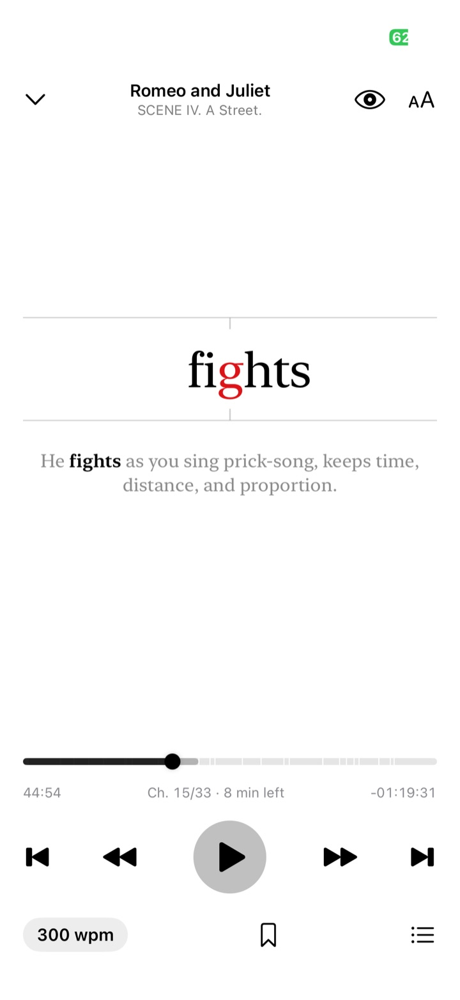
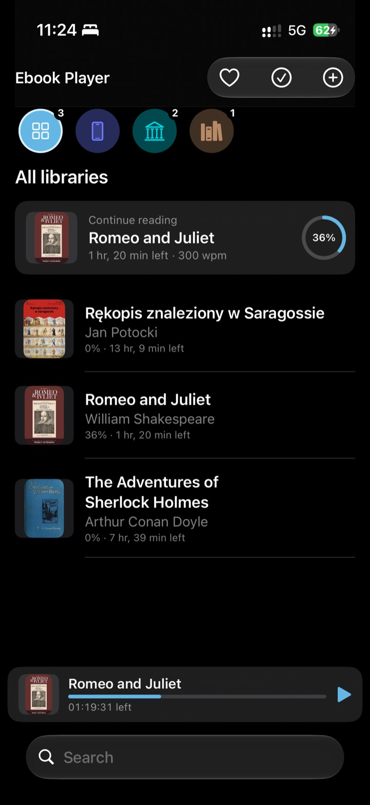
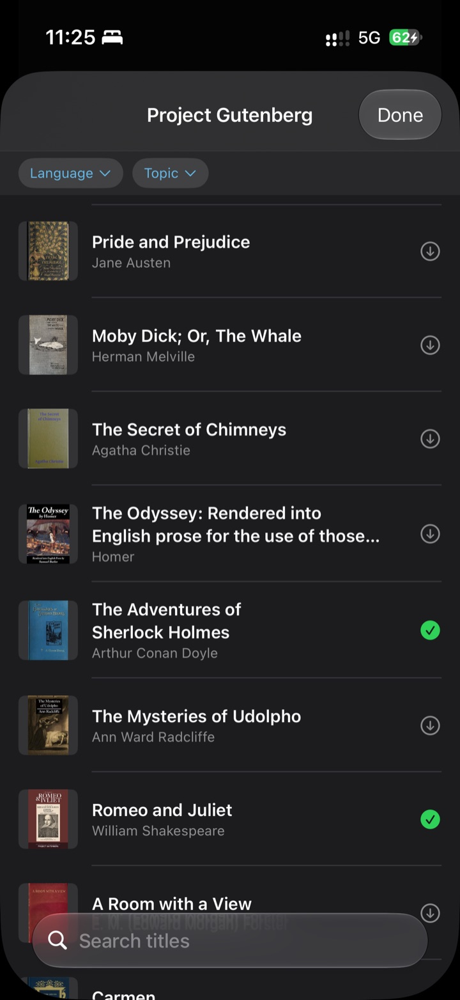
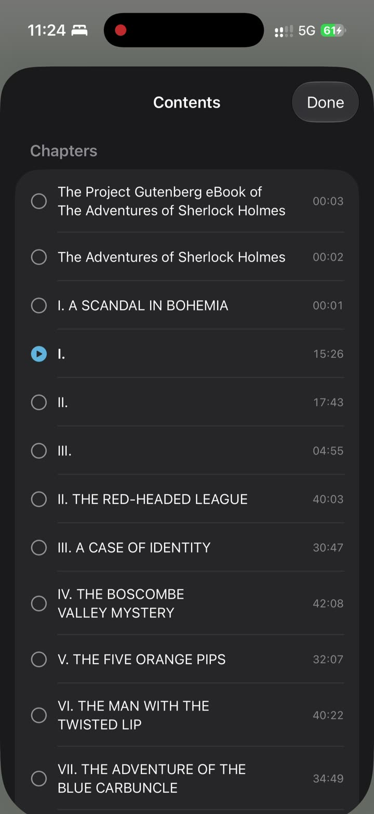
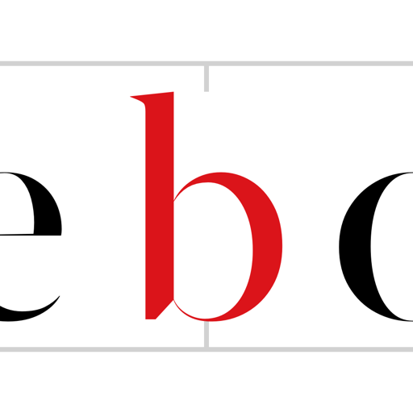

Ebooks Player
Ebooks PlayerYour ebooks,
played one word at a time.
Ebooks Player flashes each word in the centre of the screen, its middle letter in red, at 200–400 words per minute. Your eyes stay still. The book moves.
Download on theApp StoreTry it: this is how the app reads. Tap the speed to change it.
How it reads
Reading with a natural rhythm.
Words aren't flashed like a metronome. Punctuation adds pauses the way a voice would, so sentences still feel like sentences.
200–400 words per minute
Tap to cycle 200 → 400 wpm, or long-press for 25-wpm steps. Elapsed and remaining time update for the current speed.
A timeline, like an audiobook
The scrubber follows reading time. Drag it and the text scrolls live. Jump by sentence or chapter.
Step through a sentence
Pause and swipe the word sideways to move one word at a time, with the whole sentence shown beneath it.
Pause by closing your eyes
Optional. Close your eyes or look away and reading pauses; open them and it continues. Blinks are ignored. Camera frames never leave your device.
Bookmarks and chapters
A chapter list with reading time per chapter, plus bookmarks you can jump back to.
Picks up where you stopped
Your place is saved as you read, when you pause, and when you leave the app.




Your books, your files
Bring your own books.
Or pick a free classic.
No store and no DRM. Ebooks Player reads the files you already have.
- EPUB 2 & 3
- FB2
- TXT
- Markdown
- HTML
- RTF
On this iPhone
A built-in library you can also see in the Files app. Add books with the “+” button, “Open in…” or AirDrop.
Folders and iCloud Drive
Pick any folder in Files or iCloud Drive. Books are read where they are, not copied.
Project Gutenberg
Browse tens of thousands of public-domain books by language and topic, and download them in the background.
Wolne Lektury
Polish literature, free under CC BY-SA. Chapters come from the book itself, and licence boilerplate is removed.
Privacy
Nothing to sign up for.
No account, no ads, no analytics and no tracking. Your books and reading positions stay on your device. The network is used only to browse and download free books, and to find covers that are missing.
Read the privacy policy →Support
Questions and answers
How do I add my own books?
Tap “+” on the home screen and choose a file or a folder. You can also share a book to Ebooks Player from another app with “Open in…”, send it by AirDrop, or copy it into the Ebooks Player folder in the Files app.
Which formats are supported?
EPUB 2 and 3, FB2, PDF, TXT, Markdown, HTML and RTF. Books protected with DRM can't be opened. Scanned PDFs without a text layer have no words to show.
How do I change the reading speed?
Tap the “wpm” button in the reader to cycle through 200, 250, 300, 350 and 400 words per minute. Long-press it to adjust in steps of 25.
Why is one letter red?
The red letter is the middle of the word, and it always sits at the exact centre of the screen. Your eyes stay on one spot and don't have to jump along a line.
How does eye pause work, and is the camera recording me?
Eye pause is off until you turn it on with the eye button in the reader. It uses the front camera to notice when your eyes are closed (for about half a second) or when you look away (for about 1.5 seconds). Frames are analysed on the device and are never saved or sent anywhere. The camera turns off after 5 minutes of eye pause.
Can I jump back if I missed something?
Yes. Go back a sentence or a chapter with the buttons, drag the timeline, or pause and swipe the word to step back one word at a time.
Where are my downloaded books stored?
In the “On this iPhone” library, which is also visible in the Files app under Ebooks Player. They're ordinary files, so you can back them up or move them.
Do I need an internet connection?
Only to browse and download from Project Gutenberg or Wolne Lektury, and to find missing covers. Reading works fully offline.
Found a bug, a book that won't open, or have an idea?
support@example.comPlease include your device, iOS version, and the book's title and format.

Start your next book.
Free classics are waiting inside the app.
Download on theApp Store